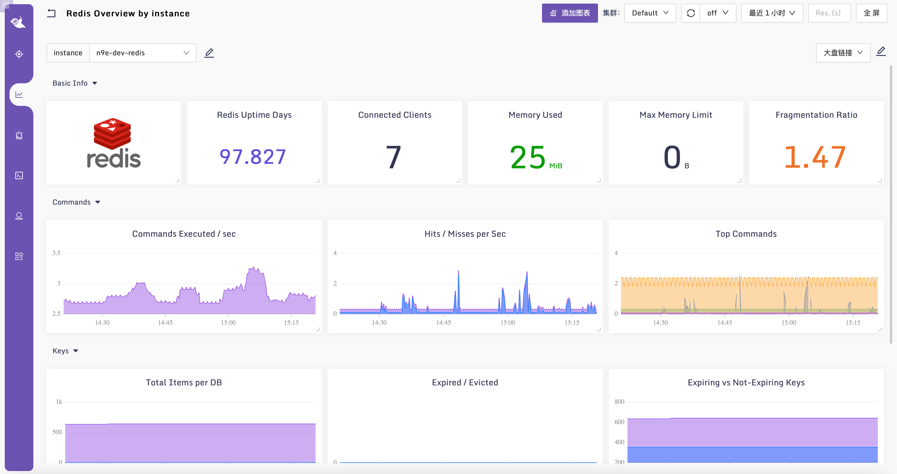

Redis
延迟
在软件工程架构中，之所以选择Redis作为技术堆栈的一员，大概率是想要得到更快的响应速度和更高的吞吐量，所以延迟数据对使用Redis的应用程序至关重要。通常我们会通过下面这两种方式来监控延迟。
- 客户端应用程序埋点。比如某个Java或Go的程序在调用Redis的时候，计算一下各个命令花费了多久，然后把耗时数据推给监控系统即可。这种方式好处是非常灵活，想要按照什么维度统计就按照什么维度统计，缺点自然是代码侵入性，和客户端埋点监控MySQL的原理是一样的。
- 使用 redis-cli 的
--latency命令，这个原理比较简单，就是客户端连上 redis-server，然后不断发送 ping 命令，统计耗时。我在远端机器对某个 redis-server 做探测，你可以看一下探测的结果。
redis-cli --latency -h 10.206.0.16 -p 6379
min: 33, max: 58, avg: 35.30 (1013 samples)
然后我又跑到 10.206.0.16 这个机器上，对本机的 redis-server 做探测，结果是这样的。
redis-cli --latency -h 127.0.0.1 -p 6379
min: 0, max: 18, avg: 0.19 (1415 samples)
远端机器平均延迟是 35.3 毫秒，本地探测平均延迟是 0.19 毫秒，相差巨大，时间主要是花费在网络 I/O 上了，Redis本身执行效率是很高的。
这里你可能会有疑问，只使用 ping 命令对 redis-server 做探测，怎么能反映出真实的工作负载呢？会不会出现 ping 命令执行得很快，应用发起的真实请求却很慢的情况呢？
这个问题很好，不过 Redis 是单线程顺序执行的模型，如果某个请求执行得慢，其他所有客户端都得等着，所以我们使用 ping 命令对 redis-server 做探测，理论上探测结果是可以反映 redis-server 的真实工况的。
如果我们发现Redis变慢了，应该怎么找到那些执行得很慢的命令呢？这就要求助于slowlog 了。说到慢日志，首先我们要定义执行时间超过多久算慢，Redis默认的配置是10毫秒，比如我们调整成5毫秒。
[root@tt-fc-dev01.nj ~]# grep slower /etc/redis.conf
slowlog-log-slower-than 10000
[root@tt-fc-dev01.nj ~]# redis-cli
127.0.0.1:6379> config set slowlog-log-slower-than 5000
OK
127.0.0.1:6379> config get slowlog-log-slower-than
1) "slowlog-log-slower-than"
2) "5000"
127.0.0.1:6379> config rewrite
OK
127.0.0.1:6379> quit
[root@tt-fc-dev01.nj ~]# grep slower /etc/redis.conf
slowlog-log-slower-than 5000
之后一些执行时间超过5毫秒的命令就会被记录下来，然后使用 slowlog get [count] 就能查看 count 出来的slowlog条数了。这里我获取 2 条作为样例。
127.0.0.1:6379> SLOWLOG get 2
1) 1) (integer) 47
2) (integer) 1668743666
3) (integer) 13168
4) 1) "hset"
2) "/idents/Default"
3) "tt-fc-dev01.nj"
4) "1668743666"
5) "127.0.0.1:43172"
6) ""
2) 1) (integer) 46
2) (integer) 1668646906
3) (integer) 13873
4) 1) "hset"
2) "/idents/Default"
3) "10.206.16.3"
4) "1668646906"
5) "127.0.0.1:44612"
6) ""
对于每一条 slowlog，其各个字段的含义是：序号、时间戳、执行时间（单位是微秒）、命令及其参数、客户端IP和端口等。
流量
Redis每秒处理多少请求，每秒接收多少字节、返回多少字节，在Redis里都内置了相关指标，通过 redis-cli 连上Redis，执行 info all 命令可以看到很多指标，绝大部分监控系统，都是从 info 命令的返回内容中提取的指标。
# redis-cli -h 127.0.0.1 -p 6379 info all | grep instantaneous
instantaneous_ops_per_sec:0
instantaneous_input_kbps:0.00
instantaneous_output_kbps:0.00
ops_per_sec 表示每秒执行多少次操作，input_kbps 表示每秒接收多少 KiB，output_kbps 表示每秒返回多少 KiB。因为我这个 Redis 几乎没有什么流量，所以返回的都是 0，正常来讲，一个 Redis 实例每秒处理几万个请求都是很正常的。
每秒处理的操作如果较为恒定，是非常健康的。如果发现 ops_per_sec 变少了，就要注意了，有可能是某个耗时操作导致的命令阻塞，也有可能是客户端出了问题，不发请求过来了。
如果把 Redis 当做缓存来使用，我们还需关注 keyspace_hits 和 keyspace_misses 两个指标。
# redis-cli -h 127.0.0.1 -p 6379 info all | grep keyspace
keyspace_hits:62033897
keyspace_misses:10489649
这两个指标都是 Counter 类型，单调递增，即 Redis 实例启动以来，统计的所有命中的数量和未命中的数量。如果要统计总体的命中率，使用 hits 除以总量即可。
hit rate = keyspace_hits / (keyspace_hits + keyspace_misses)
如果要关注近期的命中率，比如最近10分钟，就要通过 PromQL increase 函数等做二次运算。
increase(keyspace_hits[10m])
/
(increase(keyspace_hits[10m]) + increase(keyspace_misses[10m]))
如果命中率低于 0.8 就要注意了，有可能是内存不够用，很多 Key 被清理了。当然，也可能是数据没有及时填充或过期了。较低的命中率显然会对应用程序的延迟有影响，因为通常来讲，当应用程序无法从 Redis 中获取缓存数据时，就要穿透到更慢的存储介质去获取数据了。
错误
Redis 在响应客户端请求时，通常不会有什么内部错误产生，毕竟只是操作内存，依赖比较少，出问题的概率就很小了。如果客户端操作 Redis 返回了错误，大概率是网络问题或命令写错了导致的。最好是做客户端埋点监控，自己发现了然后自己去解决。
Redis 对客户端的数量也有一个最大数值的限制，默认是 10 万，如果超过了这个数量，rejected_connections 指标就会 +1。和MySQL不一样的是，Redis 使用过程中，应该很少遇到超过最大连接数（maxclients） 的情况，不过谨慎起见，也可以对 rejected_connections 做一下监控。
饱和度
Redis 重度使用内存，内存的使用率、碎片率，以及因为内存不够用而清理的Key数量，都是需要重点关注的。我们通过 info memory 命令查看一下这几个关键指标。
# Memory
used_memory:26276368
used_memory_human:25.06M
used_memory_rss:39575552
used_memory_rss_human:37.74M
used_memory_peak:33979824
used_memory_peak_human:32.41M
...
maxmemory:0
maxmemory_human:0B
...
mem_fragmentation_ratio:1.51
...
used_memory 顾名思义就是使用了多少内存，是从 Redis 自身视角来看的，human 后缀表示用人类易读的方式来表示。used_memory_rss 表示从操作系统视角来看分配了多少内存给 Redis。used_memory_rss 除以 used_memory 就是内存碎片率，即 mem_fragmentation_ratio。
used_memory_rss(39575552) / used_memory(26276368) = mem_fragmentation_ratio(1.51)
如果碎片化率比较高，说明 used_memory_rss 相对更大，used_memory 相对更小，即OS给Redis分配了很多内存，但Redis利用得不好。正常来讲，OS分配内存的时候因为有分配单位（比如 8byte、16byte、32byte、64byte）大小的限制，不可能说进程要多大就能准确分配多大，假设Redis来申请222个字节，OS会直接分配256个字节，这就会产生内存碎片，但是这种内存碎片不会很多，要不然OS会浪费很多内存，所以多给一些内存算是正常情况，即 mem_fragmentation_ratio 稍微大于1是没问题的。
另外如果执行 Flushdb，Flushdb会让Redis把数据删掉，而Redis不会立马把这部分内存归还给OS，碎片化率的指标就会巨高无比，此时我建议你重启Redis。毕竟，都已经 Flushdb 了，说明 Redis 里已经没有数据了。
随着应用程序不断删除、修改Redis中的数据，内存碎片化率也会上升，之前我看到很多人说， mem_fragmentation_ratio 超过 1.5 了，就说明碎片率太高，需要重启 Redis 或使用下面的命令让 Redis 清理碎片（这个命令从 Redis V4 才开始引入），搞得非常紧张的样子。
CONFIG SET activedefrag yes
其实大可不必，就像我上面这个例子，RSS才占用37M，Redis实际使用25M，碎片12M，小得可怜，虽然 mem_fragmentation_ratio 已经 1.51 了，但是完全不需要处理。used_memory_peak 是 32.41M，说明曾经用到过这么多，后来有些 Key 过期了或者删除/修改了，才导致碎片率高了点。
那什么时候需要处理碎片呢？机器内存不够用了，碎片化的内存浪费太多，并且碎片化率很高的时候才需要处理。我们可以通过调整下面的参数来控制碎片处理过程。
# 开启自动内存碎片整理(总开关)
activedefrag yes
# 当碎片达到 100mb 时，开启内存碎片整理
active-defrag-ignore-bytes 100mb
# 当碎片超过 10% 时，开启内存碎片整理
active-defrag-threshold-lower 10
# 内存碎片超过 100%，则尽最大努力整理
active-defrag-threshold-upper 100
# 内存自动整理占用资源最小百分比
active-defrag-cycle-min 25
# 内存自动整理占用资源最大百分比
active-defrag-cycle-max 75
上面我们讨论的是 mem_fragmentation_ratio 过大的情况，实际上这个值还有可能小于 1，表示Redis使用了超过RSS数量的内存，说明此时部分内存已经被放到交换分区上了，而磁盘的性能相比内存差了大概5个数量级，所以出现这种情况时会严重影响性能。
饱和度的度量方面，还有一个指标是evicted_keys，表示当内存占用超过了maxmemory的时候，Redis清理的Key的数量。实际上，内存达到 maxmemory 的时候，具体是怎么一个处理策略，是可以配置的，默认的策略是 noeviction。
[root@tt-fc-dev01.nj ~]# redis-cli
127.0.0.1:6379> config get maxmemory-policy
1) "maxmemory-policy"
2) "noeviction"
其他常见策略有：volatile-lru，表示从已设置过期时间的内存数据集里，挑选最近最少使用的数据淘汰掉；volatile-ttl，表示从已设置过期时间的内存数据集里，挑选即将过期的数据淘汰。
“Google的四个黄金指标”重点要关注的指标我们就描述到这里，如果这些指标出问题，上游的服务大概率会受到影响，还有一些指标虽然短期不会影响上游服务，但是如果不及时处理未来也会出现大麻烦，这类指标通常用于衡量Redis内部的一些运行工况，比如：
- 持久化相关的指标：rdb_changes_since_last_save 表示自从上次落盘以来又有多少次变更。
- 主从相关的指标：master_link_down_since_seconds 表示主从连接已经断开的时长。
这些都属于见名知义的指标，我们就不展开了，下面我们看一下Redis的监控数据如何采集。
采集配置
Categraf 也提供了 Redis 采集插件，配置样例在 conf/input.redis/redis.toml，我们看一下。
[[instances]]
# address = "127.0.0.1:6379"
# username = ""
# password = ""
# pool_size = 2
# # Optional. Specify redis commands to retrieve values
# commands = [
# {command = ["get", "sample-key1"], metric = "custom_metric_name1"},
# {command = ["get", "sample-key2"], metric = "custom_metric_name2"}
# ]
# labels = { instance="n9e-dev-redis" }
最核心的配置就是 address，也就是 Redis 的连接地址，然后是认证信息，username 字段低版本的 Redis 是不需要的，如果是 6.0 以上的版本并且启用了ACL的才需要。
commands 的作用是自定义一些命令来获取指标，和 MySQL 采集器中的 queries 类似，在业务指标采集的场景，通常能发挥奇效。
labels 是个通用配置，所有的 Categraf 的采集器，都支持在 [[instances]] 下面自定义标签。当然，我个人还是习惯使用机器名来过滤，这样便于把 Redis 的指标和 Redis 所在机器的指标放到一张大盘里展示。这里我提供了一个 仪表盘样例，供你参考。
